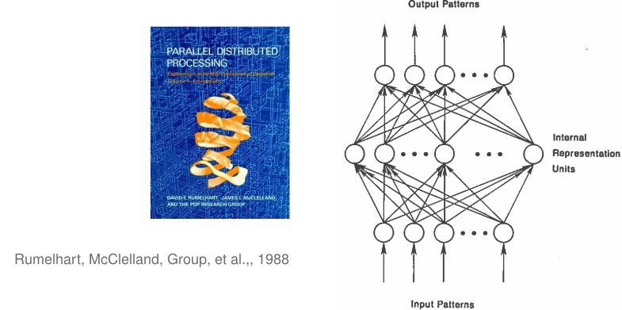
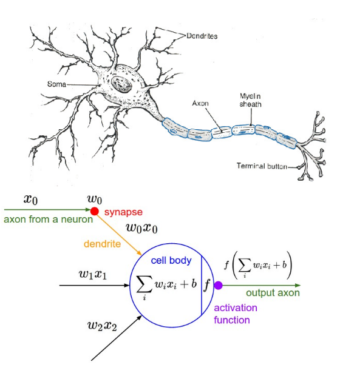

Modern Artificial Intelligence and Machine Learning


A lot of progress in machine learning can be attributed to better hardware and more data
Connectionism and Neural Networks
-

- At the heart of deep learning, there is an artificial neural network
- Artificial neural networks are a subset of machine learning approaches using networks of simple (neuron-like) units.
The First Artificial Neuron
In 1943, McCulloch and Walter Pitts propose the first artificial neuron, the Linear Threshold Unit.
In the Linear Threshold Unit, $f$ is a step function: $f(x) = 1$ if $x>0$
- "Modern" artificial neurons are similar, but $f$ is typically a sigmoid or rectified linear function
Mathematical Model of the Artificial Neuron
- $x_i$ is the state of the input neurons
- $w_i$ is the weight of the connection
- $b$ is a bias
- The total input to the neuron is: $ a = \sum_i w_i x_i +b $
- The output of the neuron is: $ y = f(a) $
- where $f$ is the activation function
The Perceptron
- The Perceptron is a special case of the artificial neuron where: $$ \begin{eqnarray} \mbox{y} & = & \begin{cases} -1 & \mbox{if } \sum_j w_j x_j + b \leq 0 \\\\ 1 & \mbox{if } \sum_j w_j x_j + b > 0 \end{cases} \end{eqnarray} $$
- Three inputs $x_1$, $x_2$, $x_3$ with weights $w_1$, $w_2$, $w_3$, and bias $b$